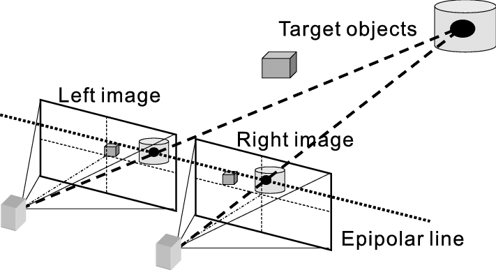

Stereo Vision Binocular stereopsis or stereo vision is the ability to grab information using a digital camera device it then will splice the two images captured together which is what gives it the depth and distance from an object. Stereo vision is what animals and humans alike use to see and perceive depth. Our eyes are considered cameras and our brain will put the two images together instead of a software. Stereo vision in cars could lead to a massive improvement on the autonomous driving front, with the use of stereo vision it opens up more opportunities in this field from cars giving basic help in driving to completely driving themselves.
“Autonomous technologies utilize state-of-the-art cameras and sensor technologies to create an accurate image in real-time not only of its immediate surroundings but also of what lies ahead along the route. As a result, ensuring the safety of the driver as well as pedestrians have become much more convenient.” (quote from kia)
As technology is very advanced now compared to the past, cars are now able to implement stereo vision to assist with autonomous driving. The greater depth perception helps the car to assess the state of the roads and to better increase safety of the driver. Stereo vision could also be used in manually driven cars to collect information on roads, traffic, and accidents and by uploading this data to the cloud, it could decrease traffic and increase road safety.
Stereo vision in cars is beneficial in many ways as it is the best way for our computers to detect objects on the road and can allow for real-time vision processing that will ensure the safety of the driver is the top priority. The information gathered from stereo vision also allows for errors to get fixed and driving functions to improve. Without Stereo vision, self driving cars would not be functionable as we know it today